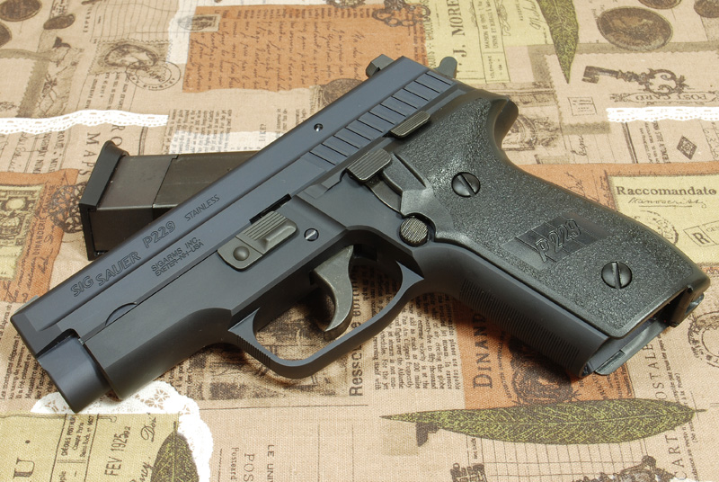

P229型手槍

由於P228只有9公釐口徑，並不能像P220那樣可更換不同口徑的槍管。為了讓採用雙排彈匣的SIG-SAUER系列手槍有多種不同的口徑選擇以滿足市場的需要，美國SIG-Arms公司在1990年開始研製P229手槍，第一個原型在1991年初的美國槍展上公開，在1992年投放市場。外表上，P229與P228非常相似，尺寸相同。事實上，P229就是在P228的底把上設計出來的，所有的內部機構都是P228的，P229與P228的主要區別是在口徑和滑套設計上。
P229與SIG經典手槍系列的其他成員一樣，採用了由約翰·白朗寧首創的後膛閉鎖槍管短行程後座作用模式以使全槍運作。在射擊時，滑套和槍管鎖在一起並且向後移動幾公釐，槍管會向後移直到後方的絞鏈時使後膛向下傾斜。這個時候，子彈已經離開槍管，而壓力亦已經下降到安全水平。在這種情況以下，滑套已完成向後行程，並以拋彈口退出彈殼。然後復進簧（又稱：反沖彈簧）會向前推動滑套，從彈匣上取出最頂部的一發並讓槍管後膛向上回複水平同時向前運動幾公釐，再將滑套和槍管一起閉鎖。
P229可以裝填、發射.22 LR、9×19公釐、.40 S&W和.357 SIG四種口徑。而.40 S&W與.357 SIG口徑之間的轉換是十分簡單，只要更換槍管即可。通過Bar-STO精密機械公司生產的口徑轉換槍管，[21]也能夠讓P229或P226在.40 S&W／.357 SIG與9×19公釐口徑之間進行轉換。其.40 S&W的型號附送的彈匣亦刻有.357 SIG的銘文，意味著亦可對應.357 SIG子彈，反之亦然。9×19公釐口徑型（包括連戰術配件導軌與否）可以轉換為.22 LR口徑，但其過去所設計的機匣都沒有被設計成足以提供足夠容納可發射.357 SIG和.40 S&W的兩種較大口徑的子彈的零件的所需空間。
由於在2011年西格-紹爾已經慢慢地開始在所有P229型號的範圍都採用了E2樣式的握把系統——這種類似的改進舉動也在較大的全尺寸型的P226上進行——他們也開始直接使用.357 SIG／.40 S&W口徑規格的底把尺寸作為他們的原廠9×19公釐口徑P229底把，可能是為了優化保留在庫存內可以更換或變化的零部件的需要。雖然生產商已經宣布，舊式型號的彈匣仍然可以在新的機匣型號上繼續使用，西格-紹爾卻已經修改了新型的P229的9×19公釐口徑原廠彈匣的設計，另一方面亦重新調整握把內的彈匣插槽的大小，以對應重新設定以後的機匣／底把。其結果是，較新型的彈匣由於其直徑較大，因而不能反向兼容。
特點：1.結構緊湊 2.精度好。